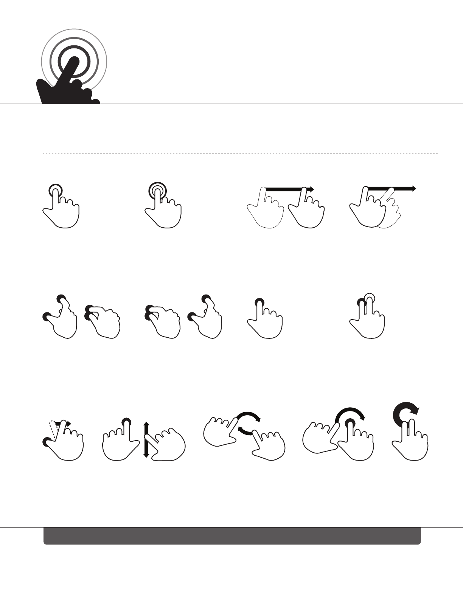

Tap Double tap Drag Flick
Pinch Spread Press Press and tap
Press and drag Rotate
OR OR OR
Touch Gesture
REFERENCE GUIDE
By Craig Villamor, Dan Willis, and Luke Wroblewski
Last updated April 15, 2010
CORE GESTURES Basic gestures for most touch commands
Press surface with one finger and
move second finger over surface
without losing contact
Press surface with
one finger and briefly
touch surface with
second finger
Touch surface for
extended period
of time
Briefly touch surface
with fingertip
Rapidly touch surface
twice with fingertip
Move fingertip over
surface without
losing contact
Quickly brush surface
with fingertip
Touch surface with
two fingers and bring
them closer together
Touch surface with
two fingers and
move them apart
Touch surface with two fingers
and move them in a clockwise
or counterclockwise direction
Supporting materials for this guide can be found online at: http://www.lukew.com/touch/
This work is licensed under the Creative Commons Attribution-Noncommercial-Share Alike 3.0 Unported License.
To view a copy of this license, visit http://creativecommons.org/licenses/by-nc-sa/3.0/